Chapter 6 Shoes
6.1 Longitudinal Shoe Study
6.1.1 Paper describing the database
Paper subdirectory of Github repository
Goal:
- Describe experiment
- Describe database function
- Publicize data for analysis by others in the community
Methods and Data Description
Methods and data description handed off to Alicia for editing
Data Analysis Tools
- Working with the
EBImagepackage - very fast processing of images
Film and Powder Images
Analysis Summary: Create a mask via thresholding, clean it up, fill in mask holes, creating a shoe “region” mask. Apply this mask to the image, replacing any pixels outside the mask with the median background pixel. Additional thresholding and normalization can be applied if a binary image is more desireable.
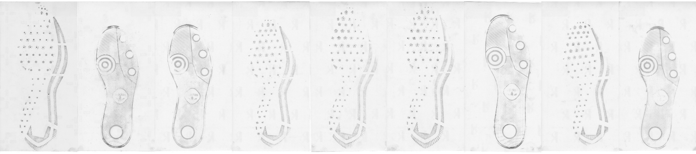
- Create threshold mask
- Blur image (circular/gaussian blur, diameter 15)
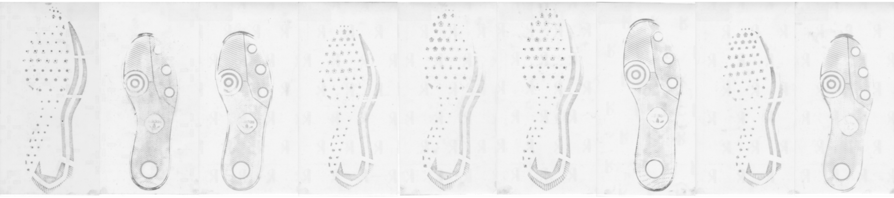 - Invert the image
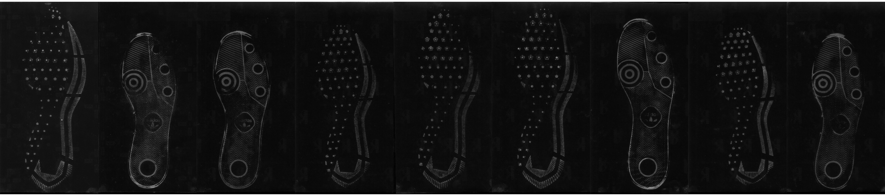 - Threshold image (adaptive threshold, 10 x 10 region, keep anything with an average higher than 0.025 from the mean)
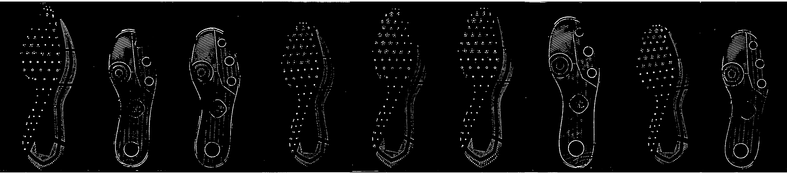 - Create mask
Default parameters selected by visually screening several shoes: 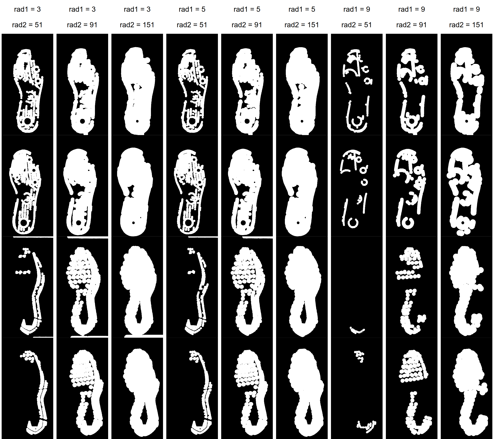 (default parameters rad1 = 5, rad2 = 91, proportion = 1.5*area of rad2 in px/area of image in px)
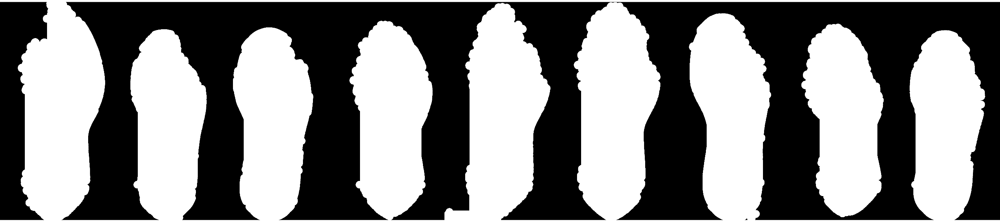- erode mask image (circle, diameter rad1)
- dilate mask image (circle, diameter rad2)
- label disjoint regions of the image
- prune small image regions (area < proportion parameter)
- Fill in mask holes
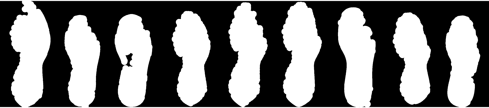 - Expand mask to capture entire shoe region

- set background color
- create dataframe of useful (non-background) pixels
- fill in holes and concave regions in mask, then expand by expand_rad vertically and horizontally (similar to “convex hull”, but with additional expansion radius)
- Blur image (circular/gaussian blur, diameter 15)
Mask image to remove extra variability unrelated to the shoe
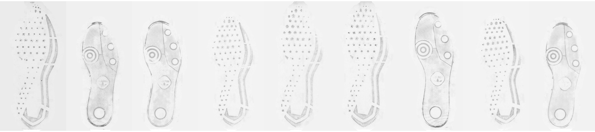Threshold masked image?
Con: Lose grey information; Pro: fully remove background
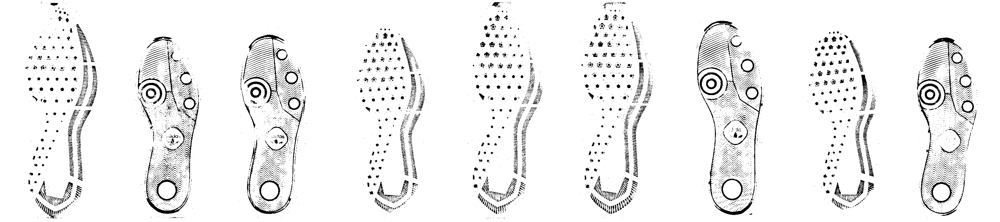Compromise: Keep grey pixels from thresholded, masked image (e.g. use 3. as a mask), then renormalize
I’ve added the functions from last week to the ShoeScrubR package, which will hopefully contain methods for handling all of the different 2D shoe data from the longitudinal study.
Using that package, I tried the method out on a sequence of shoes over time to see what methods might best show wear. Each column shows a single left shoe over four timepoints. The shoes are the first 9 shoeIDs (e.g. 1 - 9).
Original

Cleaned

Cleaned and Thresholded

Even with the cleaning methods… there is a lot of extra noise.
Next step: templating!
Basic framework:
Create a template for each size and model combination
(using GIMP - if I could automate this, I wouldn’t need the template 🙄 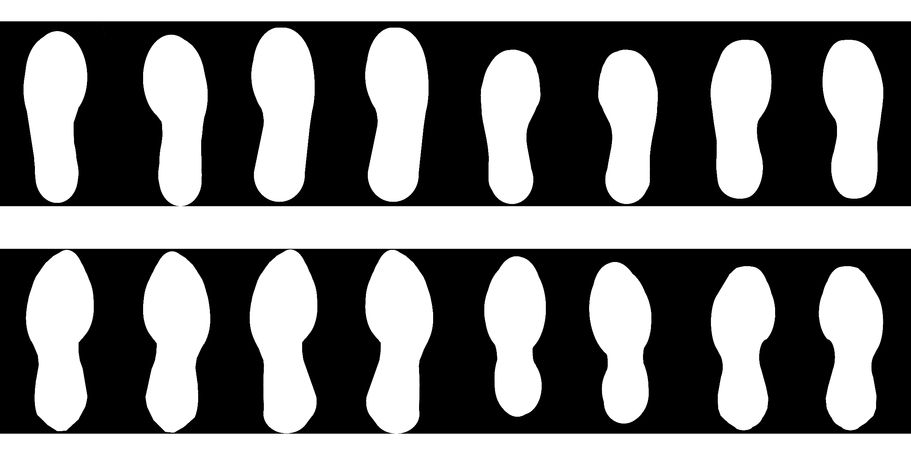Intelligently brute force angle and position of template
Goal: Maximize the number of black pixels in the image within the template region
Start with an image and a template mask
Blur, normalize, invert, and threshold the image
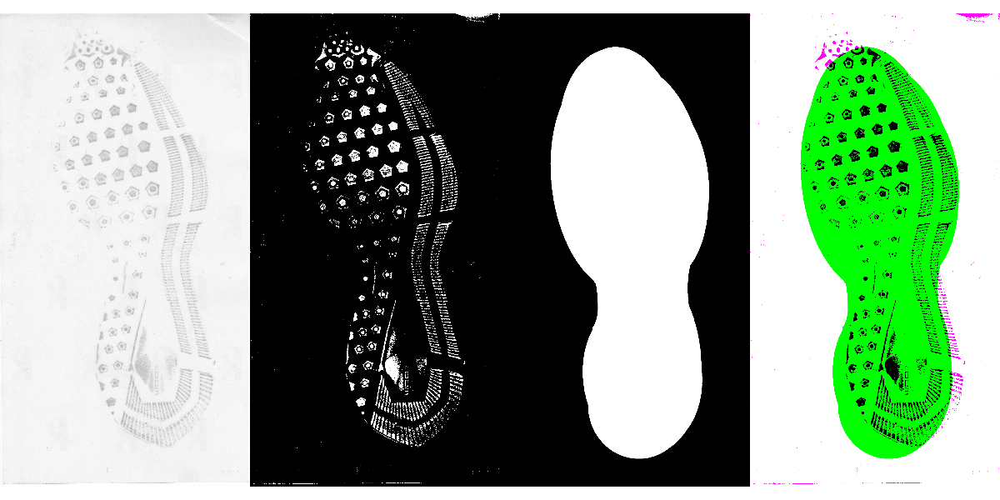Naively align the “centers” of the two images (avg of white pixel row/cols). To make this calculation comparable, do some very crude dilation/erosion (that may or may not generalize that well 😭) to fill in the image a bit.
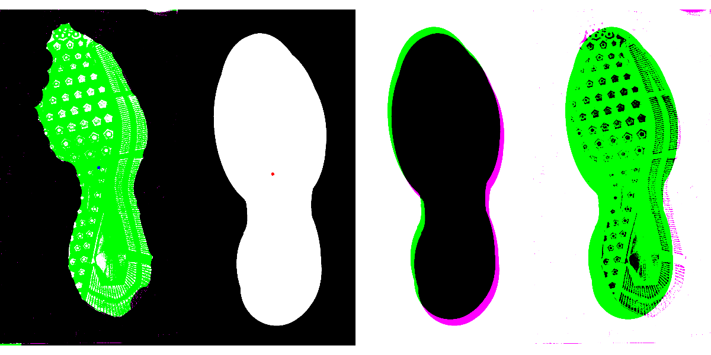
Then make the aligned center the actual center of the image via padding. (This is the 1st time we have modified the actual image beyond thresholding and color changes).Create a new mask to sample the image (and the mask) radially.
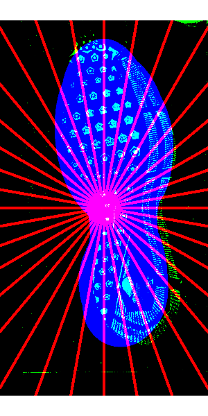
Create multiple radial masks, each offset slightly; optimize over the intersection (# pixels or average pixel intensity) to get a coarse alignment angle. 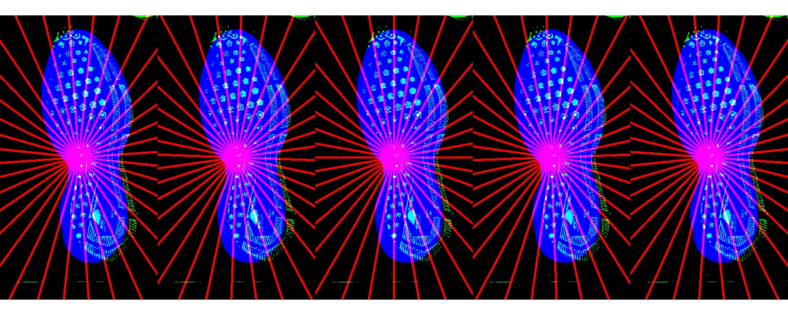Brute force for finer alignment.
Remove anything not in the mask region.
Wear Characterization
Ideas:
- average intensity of cleaned image
- length of border/edges detected
6.2 Passive Shoe Recognition
###CoNNOR: Convolutional Neural Network for Outsole Recognition##
Project Overview
- Label images of shoes according to geometric classification scheme
- Use convolutional base of pretrained CNN VGG16 and train a new classifier on labeled features
- Eventually, acquire real data passively and use CoNNOR to assess feature similarities and frequencies
Link to submitted Creative Component on CoNNOR
Github repository for paper submitted to Forensic Science International
Exploring new directions:
- Truncate convolutional base and train random forest on features
- Could replace fully connected layers of neural net as classifier
- Importance score can filter/reduce the number of features
- Block 4 random forest training terminated after one week :(
- Block 5 currently training for two different random forest packages (randomForest and ranger)
- If new models take more than 1-2 weeks, will look into subsampling techniques.
- Spatial integration
- Model is currently set up to take in 256x256 pixels
- Try taking in full shoe using a sliding window of size 256x256
- View class predictions spatially
- Fully convolutional networks (FCNs)
- Unsupervised segmentation to assess current classification scheme
- Handle whole shoe image of any size (instead of only 256x256 pixel images)
References for CNNs and FCNs
Stack Exchange post explaining patchwise training
“Learning Hierarchical Features for Scene Labeling”: describes an application of multi-scale CNNs and image pyramids
“Pyramid methods in image processing”: classic paper from 1984 explaining pyramid methods
“Fully Convolutional Networks for Semantic Segmentation”
“W-Net: A Deep Model for Fully Unsupervised Image Segmentation”
6.3 Maximum Clique Matching
6.4 Project Tread (formerly Cocoa Powder Citizen Science)
Project Tread, modified from Leverhulme Institute’s Sole Searching, is a developing CSAFE project with the goals of engaging community participation in forensic research and acquiring shoe print data that may be useful in future analyses.
In progress:
- Review procedures and IRB documents written by James
- Perhaps modify procedures, then bribe some friends into helping me test them :)
- Test for length, clarity, ease, etc.
- Be involved in set up of data collection site (through CSSM)
6.5 3d Shoe Recognition
The set up
What we have tried
What we are doing now
- Transforming the mesh objects to points aligned by the center of mass to overlay them detecting difference.
 - Problems
- Isnt aligning properly as you can see
- Next
- angle transformations
- Problems
- Isnt aligning properly as you can see
- Next
- angle transformations
References
Kim, Hae Yong, and Sidnei Alves de Araújo. 2007. “Grayscale Template-Matching Invariant to Rotation, Scale, Translation, Brightness and Contrast.” In Advances in Image and Video Technology, edited by David Hutchison, Takeo Kanade, Josef Kittler, Jon M. Kleinberg, Friedemann Mattern, John C. Mitchell, Moni Naor, et al., 4872:100–113. Berlin, Heidelberg: Springer Berlin Heidelberg. https://doi.org/10.1007/978-3-540-77129-6_13.